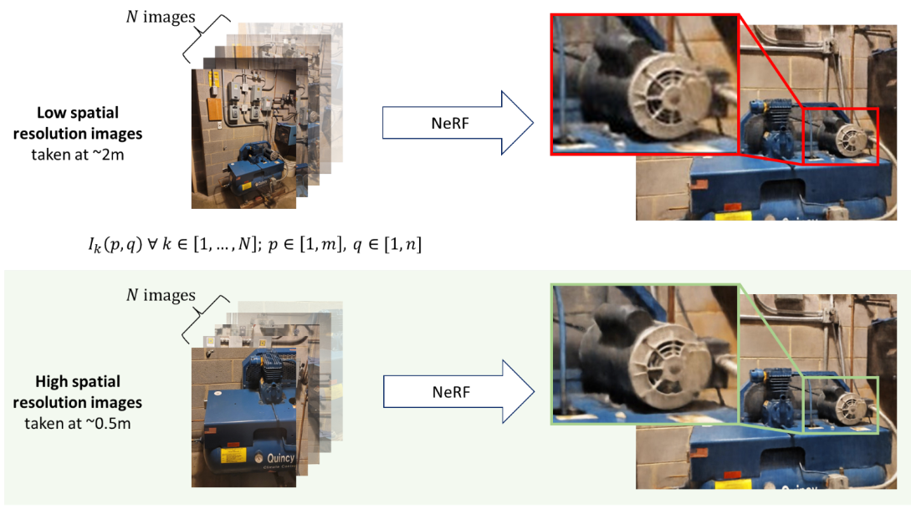

Publications
Robotic Learning & Motion Planning
 |
Whole Body Planning of Mobile Manipulators Leveraging Lie Theory based Optimization Workshop RSS 2025 Workshop: Mobile Manipulation: Emerging Opportunities & Contemporary Challenges, arXiv Pre-print https://doi.org/10.48550/arXiv.2410.15443 |
 |
Collaborative motion planning for multi-manipulator systems through Reinforcement Learning and Dynamic Movement Primitives Conference ICRA 2025, IEEE, https://doi.org/10.1109/ICRA55743.2025.11127855 |
 |
Generalizing kinematic skill learning to energy efficient dynamic motion planning using optimized Dynamic Movement Primitives Journal *Equal Contribution, Robotics and Computer Integrated Manufacturing, Elsevier, https://doi.org/10.1016/j.rcim.2025.102983 |
 |
Hierarchical Learning for Robotic Assembly Leveraging LfD Journal Advanced Robotics Research, Wiley, https://advanced.onlinelibrary.wiley.com/doi/full/10.1002/adrr.202400024 |
High Precision Robotic Measurement
 |
A Multistage Framework for Autonomous Robotic Mapping with Targeted Metrics Journal Robotics. 2023; 12(2):39. https://doi.org/10.3390/robotics12020039 |
 |
Design of a photometric stereo-based depth camera for robotic 3D reconstruction Conference Proc. SPIE 12720, 2022 Workshop on Electronics Communication Engineering, 127200M (28 June 2023); https://doi.org/10.1117/12.2675449 |
|
Photometric Stereo Enhanced Light Sectioning Measurement for Microtexture Road Profiling Conference Proceedings of the ASME 2022 International Design Engineering Technical Conferences. St. Louis, Missouri, USA. August 14–17, 2022. V007T07A056. ASME. https://doi.org/10.1115/DETC2022-91154 |